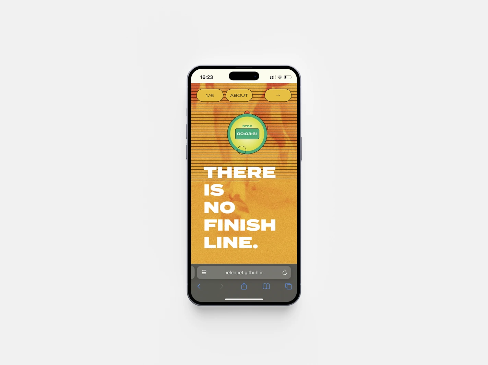
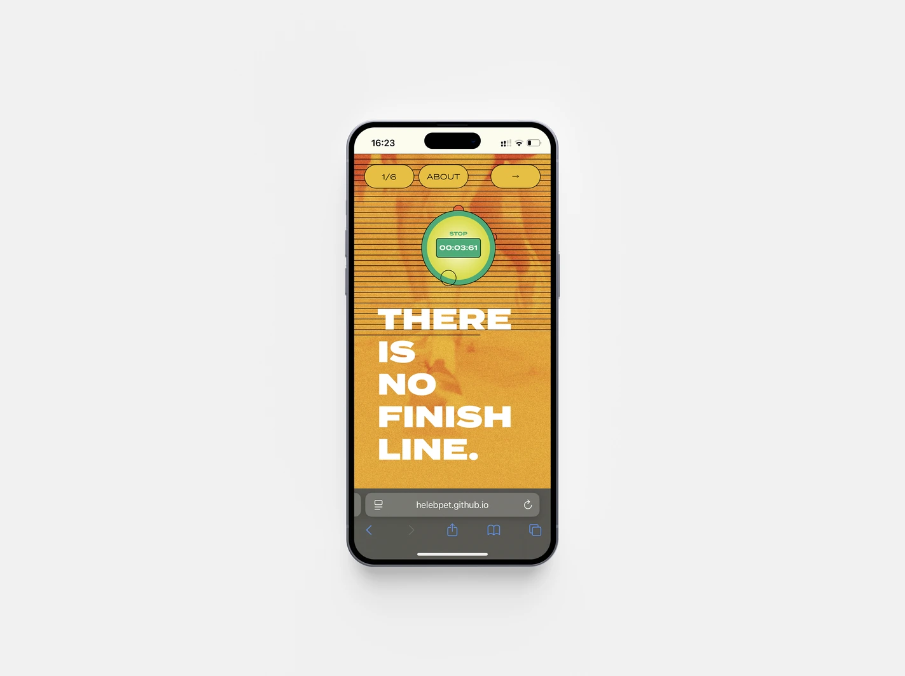
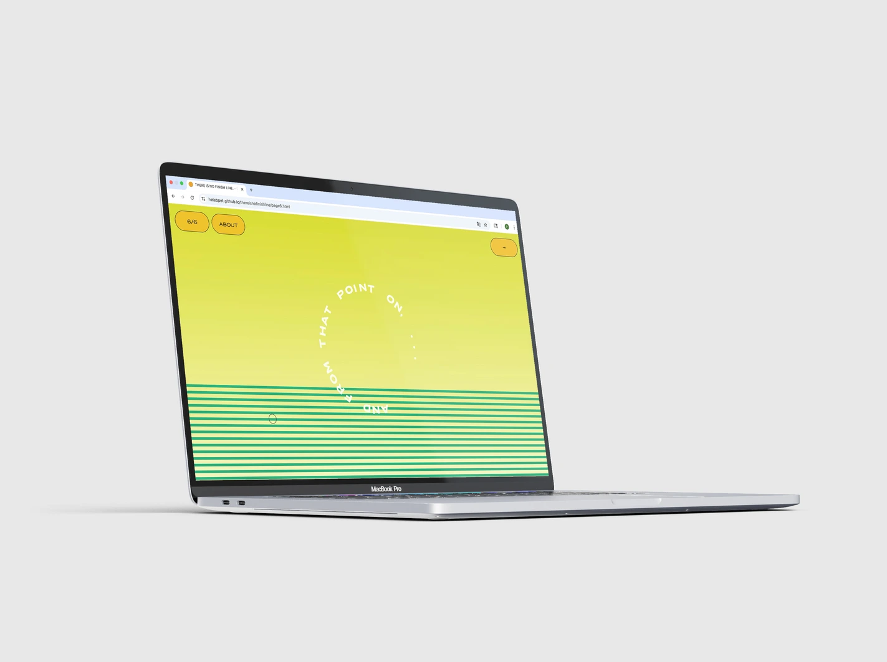
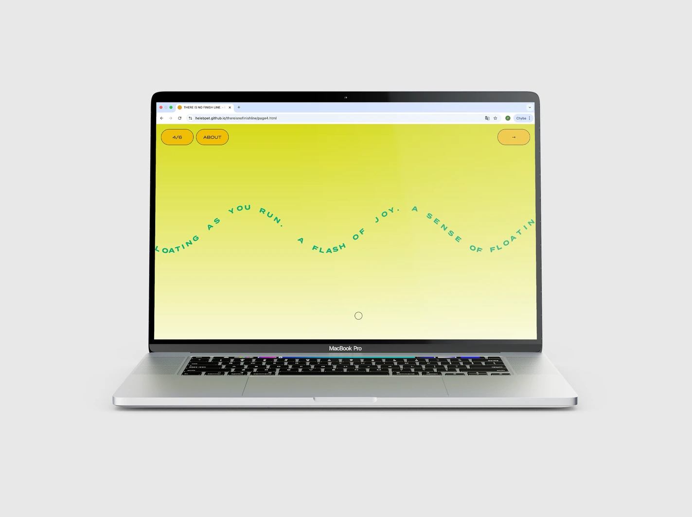
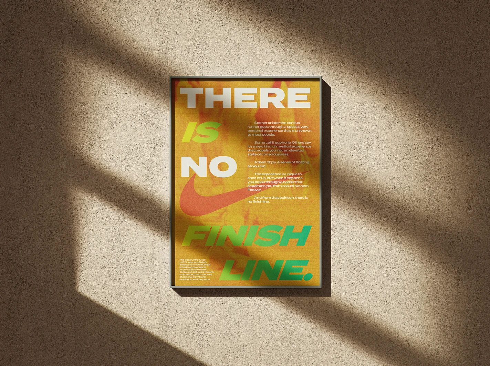
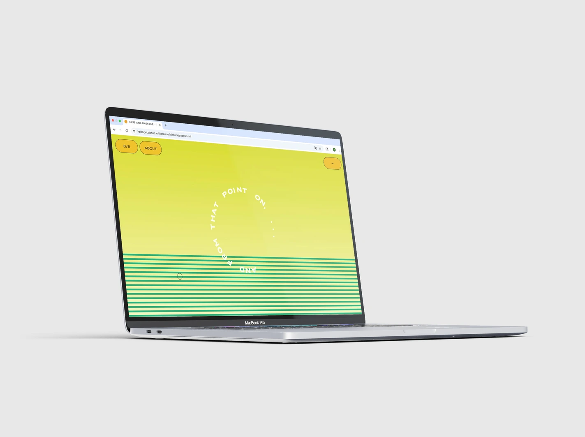
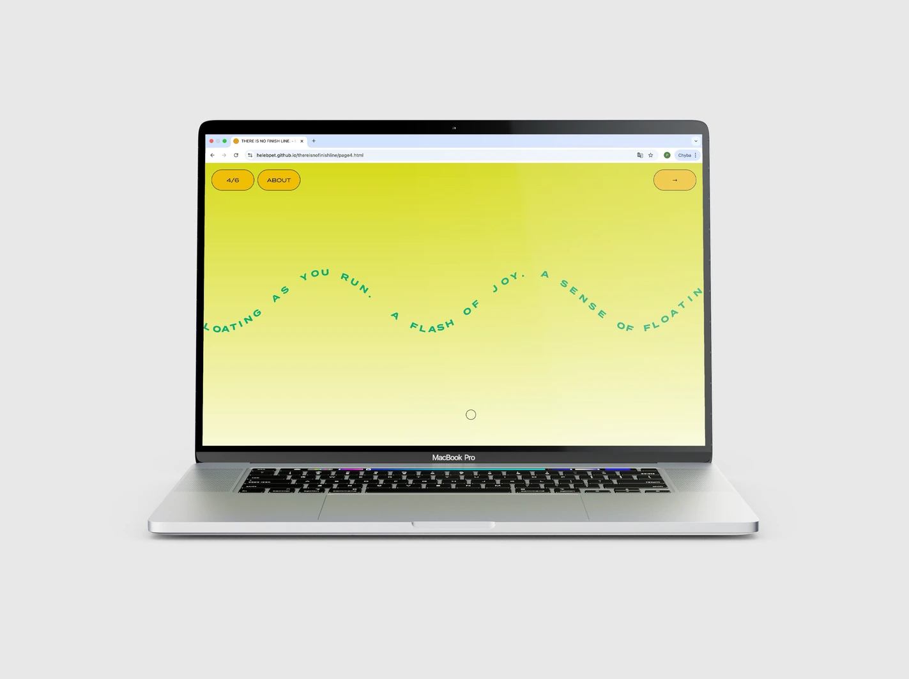
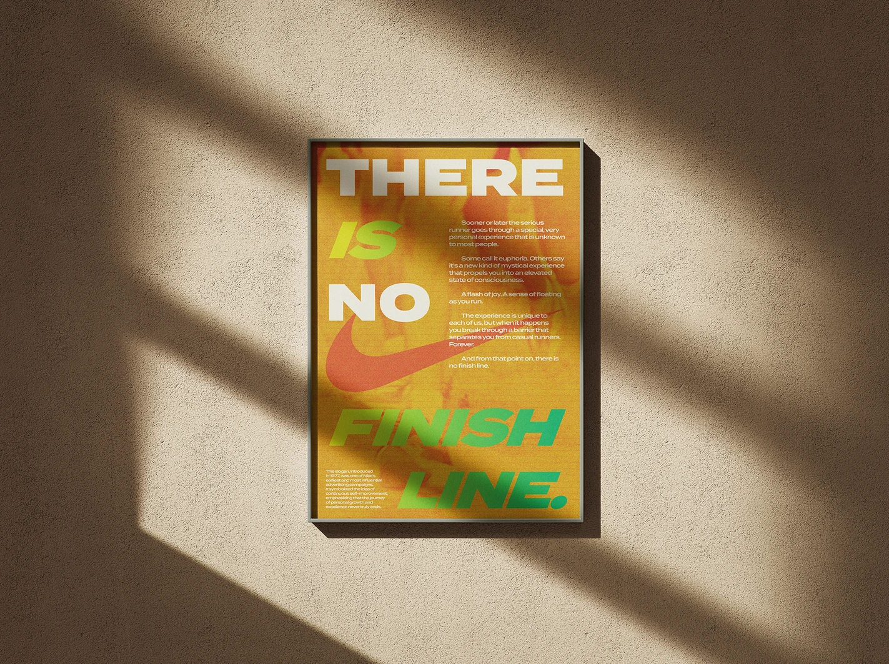

There Is No Finish Line
Spring 2025
Website, Poster
 


 





Concept
"There Is No Finish Line" reimagines Nike's groundbreaking 1977 slogan as a dynamic digital experience through interactive web design and typography. This project transforms the original campaign into a responsive website where typography becomes both message and medium. Built using p5.js, the site features a series of interconnected pages incorporating original text from the historic poster. The design reacts to user interaction, embodying the campaign's core philosophy: that success is more about enjoying the journey rather than the destination.
Design & Implementation
Animated text, responsive type, and shifting color transitions guide users through an orchestrated visual journey. Text elements float, rotate, and respond to cursor movement, generating a sense of momentum that reinforces the campaign's message. The aesthetic uses a vibrant palette of yellows, oranges, and greens to convey energy, movement and reflect the Nike brand identity. A complementary printed poster echoes the website's visual language, unifying the project across digital and physical formats.